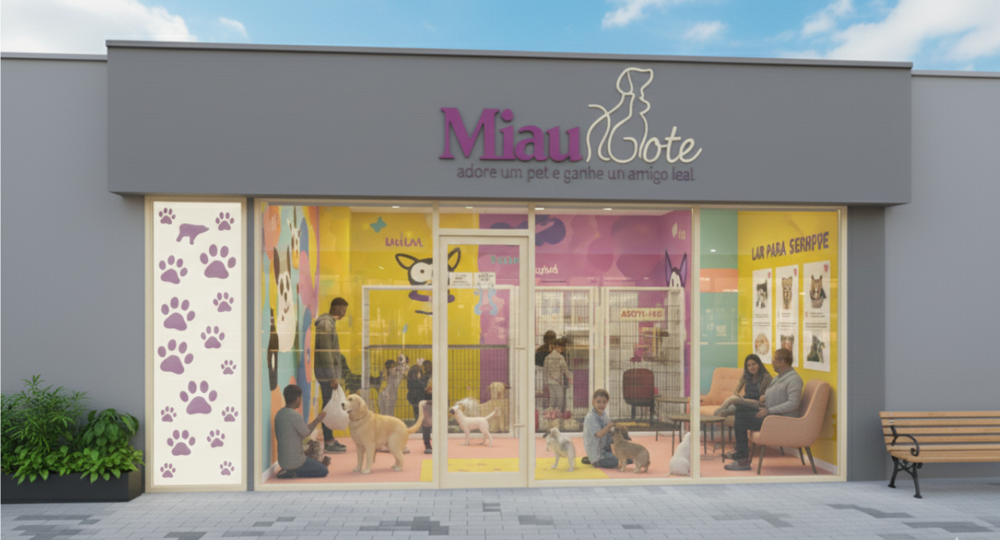

O MiauDote é uma plataforma criada com o propósito de transformar a realidade de animais abandonados, oferecendo a eles uma nova chance por meio da adoção responsável. Nosso objetivo é conectar pets que precisam de um lar a pessoas dispostas a acolhê-los com cuidado, amor e compromisso.
O projeto nasceu da união de quatro jovens apaixonados por animais e movidos pelo desejo de fazer a diferença: Ana Kelly, Carlos, Laura e Maria Luísa. Cada um trouxe suas habilidades, experiências e sensibilidades para criar um espaço seguro, intuitivo e acolhedor — tanto para quem deseja adotar quanto para aqueles que desejam disponibilizar um animal para adoção.
Nossa Missão: Promover a adoção responsável, facilitando o encontro entre animais resgatados e adotantes conscientes, contribuindo para a redução do abandono e estimulando uma cultura de respeito, empatia e cuidado com a vida animal.
Nossa Visão: Ser uma plataforma de referência em adoção de pets, ampliando nossa rede de proteção, fortalecendo parcerias com ONGs, protetores independentes e comunidades, e garantindo que cada vez mais animais encontrem um lar definitivo.
Como surgiu o MiauDOte? Durante atividades acadêmicas e projetos de extensão, os criadores perceberam a dificuldade que protetores independentes e pequenas ONGs têm para divulgar animais para adoção. Publicações isoladas nem sempre alcançavam pessoas interessadas, e muitos pets permaneciam invisíveis, mesmo estando prontos para receber um novo lar. Diante disso, Ana Kelly, Carlos, Laura e Maria Luísa decidiram criar um espaço digital onde essas histórias pudessem ganhar visibilidade. O MiauDote foi desenvolvido com carinho, tecnologia e propósito, pensando em facilitar o processo de adoção de forma simples e acessível.
Nosso Compromisso: Mais do que uma plataforma, o MiauDote é um movimento. Trabalhamos para que cada animal tenha a chance de viver com dignidade, carinho e proteção. Buscamos sempre evoluir, ampliar nossa base de parceiros, melhorar nossos recursos e impactar positivamente a vida de quem adota e de quem é adotado. Acreditamos que adoção é um gesto de amor que transforma histórias — e estamos aqui para ser a ponte que conecta essas vidas.